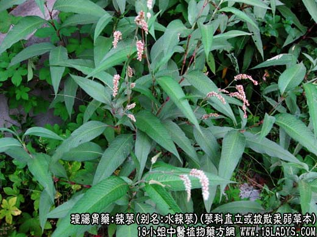

辣蓼(中药材植物名:红辣蓼)(植物科目:蓼科)

别名：水辣蓼。
植物名：红辣蓼。
生长环境：本品为直立或披散柔弱草本，生于路旁，田野间，性喜湿润，耐旱。
分布：广东、南方各省均有分布。
入药部分：根部。
采集期：全年。
自采地点：水塘边、涌边。
性味：性平、味辛。
功能：散瘀、解肝郁，去湿毒，止痢。
主治、用量和用法：1、痢疾：干根1至2两，清水煎服；2、皮肤疥癫：干根1至2两，猪瘦肉适量，清水煎服，连服3～4剂；3、肠部痛：干根1至2两，猪粉肠适量，清水煎服；4、胃痛：用法同上。
附录：（全草）治皮肤痕痒：生干合用，煎水后加盐少许，洗患处。
（叶）1、治跌打肿痛：用生叶适量捣烂，加酒煮热，敷患处。
2、治外伤出血：晒干为末，撒布患处。
（旱辣蓼）性味辛温，治痢疾，外洗治皮肤痕痒，捣烂加酒煮敷跌打肿痛，因其性辛烈，一般喜用水辣蓼。
参考资料：《中华内科杂志》（1960年第4号）解放军421医院报告：辣蓼治疗急性细菌性痢疾86例，治愈率达93%。
本文解释权归中药大全，本文地址：https://www.daquan.com/post/1594.html